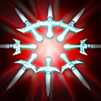

- Stifling Dagger

Бросает кинжал, который замедляет скорость передвижения врага, наносит ему физический урон в размере 65 + 25%/40%/55%/70% урона от атаки героя, а также накладывает эффекты предметов и способностей.
- Phantom Strike

Герой телепортируется к выбранному существу и, если это противник, получает дополнительную скорость атаки.
- Blur

Герой сосредотачивается на себе, что позволяет ему уклоняться от атак. Применение способности размоет очертания владельца, делая его невидимым, если рядом нет вражеских героев.
- Fan of Knives

Выпускает острые кинжалы в радиусе 550. Они наносят врагам урон в размере 16% от их максимального здоровья и накладывают истощение на 3 секунды.